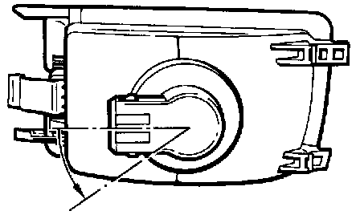

Turn Signal Bulb: Service and Repair
Removing and Installing:
- Twist bulb holder counter-clockwise (arrow) and remove from turn signal housing.
- Remove bulb from holder.
When installing, twist the bulb holder clockwise, opposite the direction shown, until the holder locks into turn signal housing.
To remove housing, Service and Repair